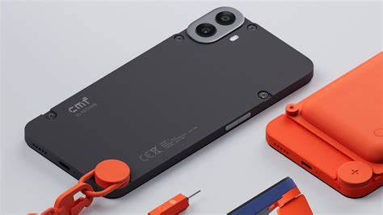
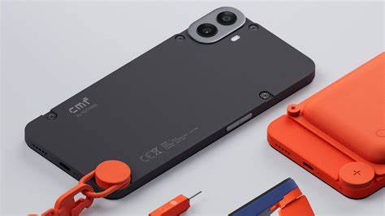

Компания Nothing была основана в 2020 году бывшим топ-менеджером OnePlus
Карлом Пей. Цель компании — создать инновационные устройства с уникальным
дизайном и простым пользовательским опытом. Основной акцент делает на
минимализме и новых подходах в индустрии технологий, стремясь отойти от
традиционных решений и предложить нечто свежее.
Цель компании — создать инновационные устройства с уникальным дизайном и
простым пользовательским опытом. Основной акцент делает на минимализме и
новых подходах в индустрии технологий, стремясь отойти от традиционных
решений и предложить нечто свежее
Доступность без компромиссов — сбалансированное сочетание цены и характеристик.
Чистая ОС без лишнего — минималистичный интерфейс для удобного взаимодействия
Элегантный дизайн — внимание к деталям и стильный внешний вид.
Хорошая производительность — надежное железо для повседневных задач и развлечений
Инновационные функции — полезные технологические решения для лучшего пользовательского опыта.
Nothing Phone 1
Батарея: 4500 mAh
Экран: 6.55"
Цена: 499€
Nothing Phone 1 — это первый смартфон от компании Nothing, который
сочетает в себе уникальный дизайн, чистую операционную систему и
инновационные функции. Он выделяется своей прозрачной задней панелью,
которая позволяет видеть внутренние компоненты устройства.
Смартфон работает на базе Nothing OS, которая предлагает минималистичный
интерфейс без лишних предустановленных приложений. Phone 1 оснащен
качественными камерами, мощным процессором и поддерживает быструю
зарядку.
А так же предлагает пользователям уникальный опыт взаимодействия с
устройством, акцентируя внимание на простоте и функциональности. Он
ориентирован на тех, кто ценит инновации и хочет выделиться среди
стандартных смартфонов.
Nothing Phone 2
Батарея: 4700 mAh
Экран: 6.7"
Цена: 599€
Nothing Phone 2 — это продолжение линейки смартфонов от компании
Nothing, которое предлагает улучшенные характеристики и новые функции.
Он сохраняет уникальный дизайн с прозрачной задней панелью, но
дополнен более мощным процессором, улучшенными камерами и увеличенным
временем автономной работы.
Phone 2 работает на базе обновленной версии Nothing OS, которая предлагает
еще более чистый и интуитивно понятный интерфейс.
Среди новых функций — улучшенная система уведомлений с светодиодной
подсветкой на задней панели, которая позволяет пользователям настраивать
различные цвета для разных типов уведомлений. Phone 2 также поддерживает
беспроводную зарядку и быструю зарядку, что делает его удобным для
повседневного использования.
Nothing Phone 2a
Nothing Phone 2a — это версия второго поколения смартфона от компании
Nothing, которая предлагает дополнительные функции и улучшения по
сравнению с оригинальным Phone 2. Он сохраняет уникальный дизайн с
прозрачной задней панелью, но предлагает новые цветовые варианты и
текстуры. Phone 2a работает на базе Nothing OS и предлагает пользователям
чистый и минималистичный интерфейс.
Среди новых функций — улучшенная система камер с поддержкой
ночной съемки и улучшенной стабилизацией видео. Phone 2a также
предлагает увеличенное время автономной работы благодаря более
энергоэффективному процессору и оптимизированной системе управления
питанием. Он поддерживает быструю зарядку и беспроводную зарядку,
что делает его удобным для повседневного использования.
Nothing Phone 3a
Nothing Phone 3a — это еще одна версия третьего поколения
смартфона от компании Nothing, которая предлагает дополнительные
функции и улучшения по сравнению с оригинальным Phone 3. Он сохраняет
уникальный дизайн с прозрачной задней панелью, но предлагает новые
цветовые варианты и текстуры. Phone 3a работает на базе Nothing OS и
предлагает пользователям чистый и минималистичный интерфейс.
Nothing Phone 3a создан для тех, кто хочет флагманский опыт по доступной цене. Он оснащён улучшенной системой камер с продвинутым ночным режимом и интеллектуальной стабилизацией видео. Новый процессор не только повышает производительность, но и делает смартфон более энергоэффективным. Увеличенная батарея в сочетании с оптимизацией питания обеспечивает до двух дней работы, а поддержка быстрой и беспроводной зарядки делает использование максимально удобным.
Nothing Phone 3
Nothing Phone 3 — это третье поколение смартфонов от компании
Nothing, которое предлагает пользователям ещё более продвинутые
функции и улучшения. Он сохраняет уникальный дизайн с прозрачной задней
панелью, но предлагает новые цветовые варианты и текстуры. Phone 3
работает на базе Nothing OS и предлагает пользователям чистый и
минималистичный интерфейс.
Nothing Phone 3 выводит опыт использования на новый уровень. Смартфон оснащён продвинутой системой камер с поддержкой съёмки в 8K и улучшенным ночным режимом, который делает фотографии яркими даже в полной темноте. Дисплей LTPO OLED с адаптивной частотой до 144 Гц обеспечивает невероятную плавность интерфейса и игр. Новый чипсет с искусственным интеллектом ускоряет работу и увеличивает время автономности. Поддержка сверхбыстрой зарядки 80 Вт и беспроводной зарядки делает Phone 3 одним из самых удобных смартфонов в своём классе.

 
